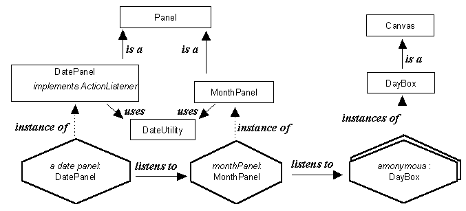

The DatePanel component - instance diagram

The DatePanel contains an instance of the MonthPanel class which
itself contains an iteration of anonymous DayBox instances. Events
generated by a DayBox instance are listened to by the MonthPanel
instance, which propagates some of them onto the DatePanel instance.
The DatePanel and MonthPanel classes make use of the class wide
resources of the DateUtility class which provides knowledge about
calendar dates.